-
Web marketing strategies
-
Description
Web pages, emails and banners work together to form integrated marketing strategies. Same visual design concepts are deployed through multiple online channels, in various forms. Targeted social media ads bring in new leads. Emails and facebook posts help the company connect to its existing customer base. After people click on the links, the web pages and promotion banners echo the messaging.
-
Time period
2016
-
Credit
Visual design: Su
Strategy and marketing: team effort
Images from suppliers used throughout.
-
Keywords
Campaign Web UI Email HTML/CSS Animated gif Social media ads
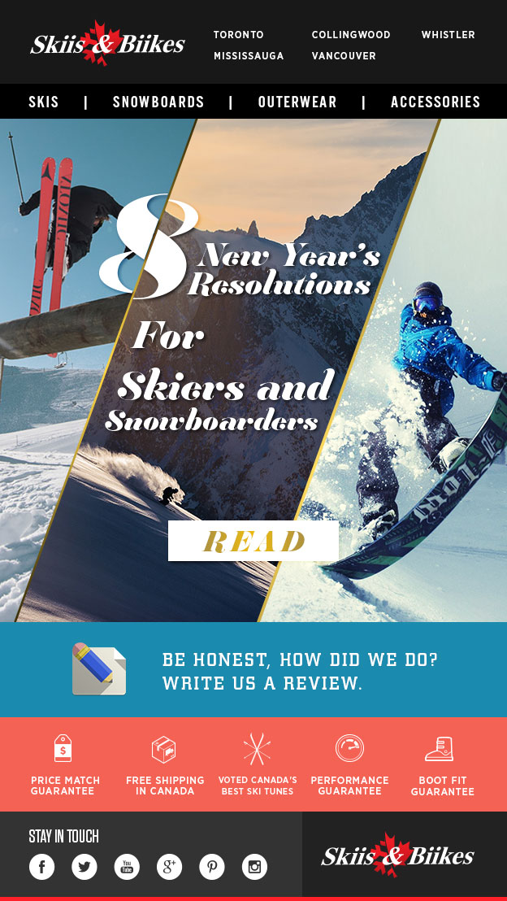
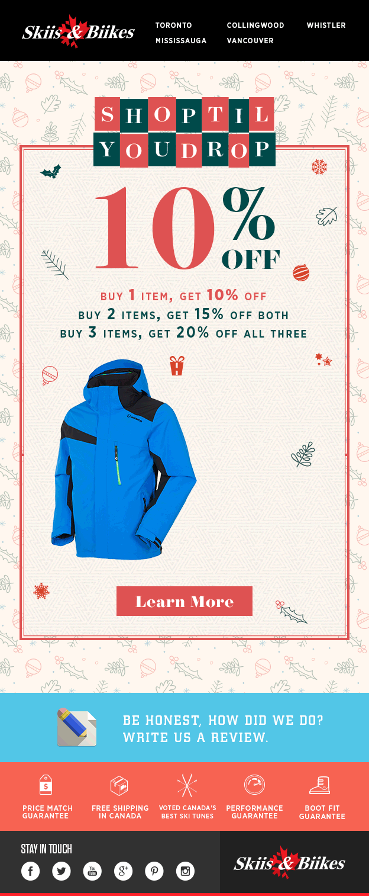
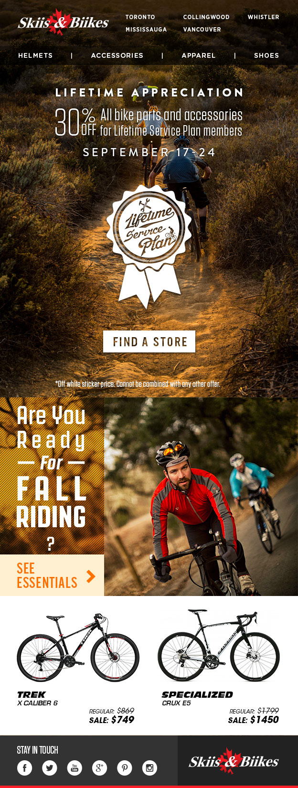
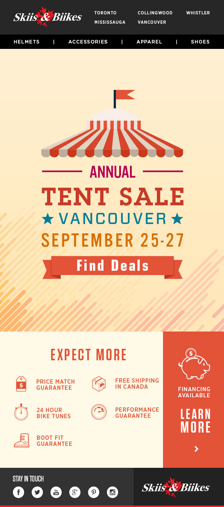
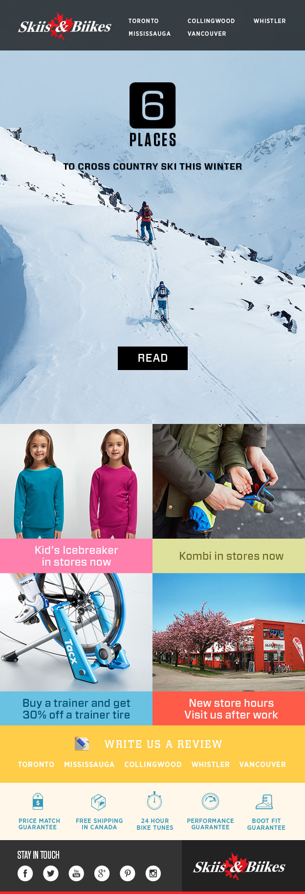
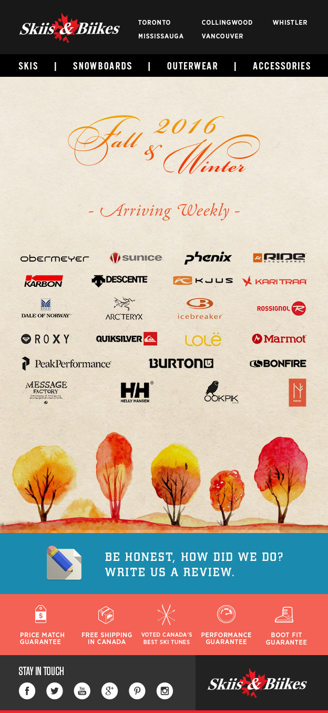
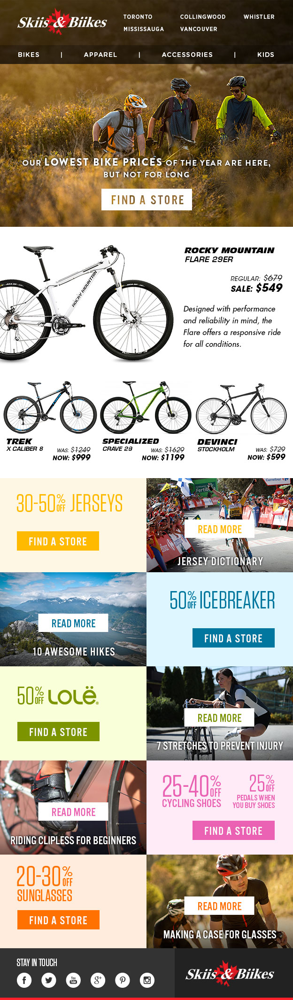
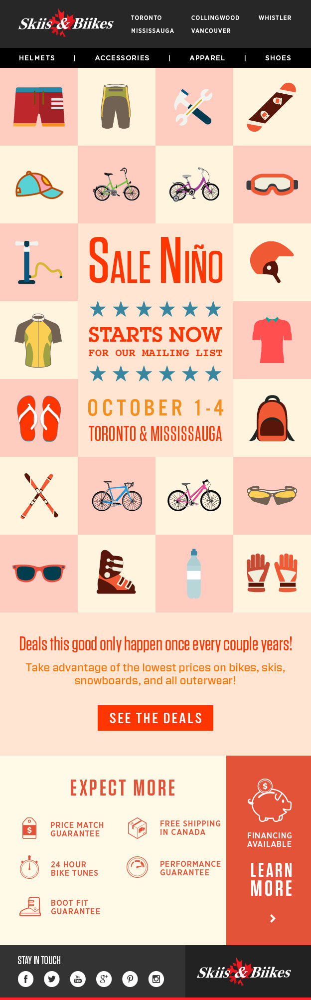
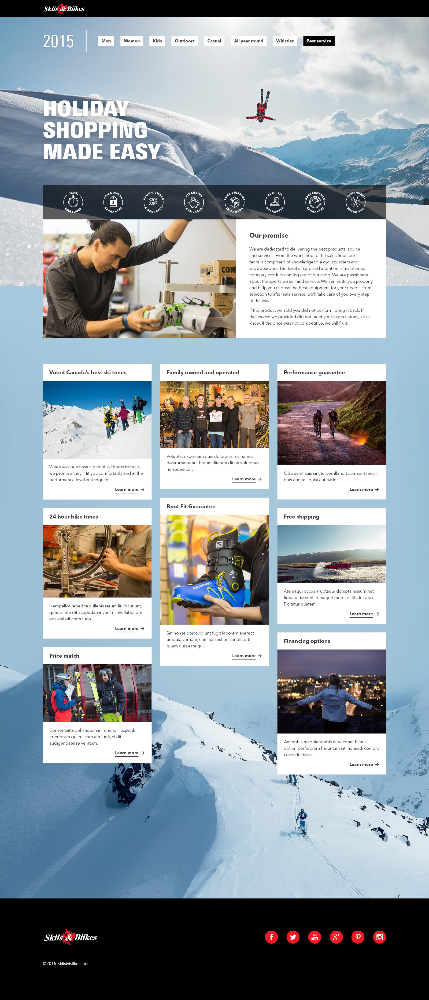
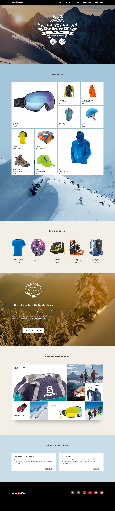
 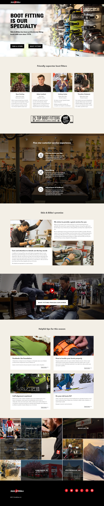
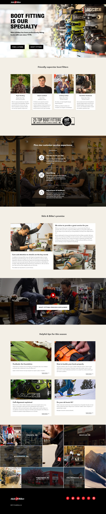
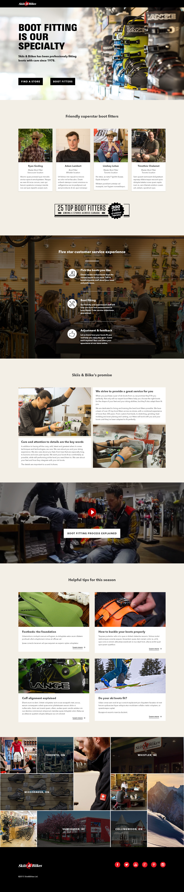